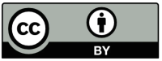

Legal and licence
This software and data are provided 'as-is' under the following Creative Commons license, without any express or implied warranty. In no event shall the authors be liable for any claim, damages or other liability, whether in an action of contract, tort or otherwise, arising from, out of or in connection with the software or the use or other dealings in the software.

Creative Commons Attribution 4.0 International (CC BY 4.0)
This is a human-readable summary of (and not a substitute for) the license.
You are free to:
- Download the data and use it: process, copy, modify;
- Use the data to create new software applications;
- Use the data for research and publish any amount of results;
The licensor cannot revoke these freedoms as long as you follow the license terms.
Under the following terms:
- Attribution
- When deriving software or a dataset, attribute the work by refering to: "https://github.com/tonyjurg/BHSaddons" and/or
 . You may do so in any reasonable manner, but not in any way that suggests the licensor endorses you or your use.
. You may do so in any reasonable manner, but not in any way that suggests the licensor endorses you or your use.
No additional restrictions — You may not apply legal terms or technological measures that legally restrict others from doing anything the license permits.
You do not have to comply with the license for elements of the material in the public domain or where your use is permitted by an applicable exception or limitation. No warranties are given. The license may not give you all of the permissions necessary for your intended use. For example, other rights such as publicity, privacy, or moral rights may limit how you use the material.
The base data of the BHSA is made available under another licence, namely the Attribution-NonCommercial 4.0 International (CC BY-NC 4.0), see github.com/etcbc/bhsa.